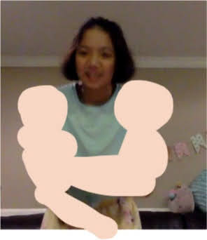

✨ Welcome to Vrielle's Website! ✨

Some fanart of Vrielle:


Vrielle's a freshman in ATCS at Bergen County Academies.
.·:*¨༺ Here's a link to her Github profile
About Vrielle:
- She started coding in second grade with her computer teacher Mr. Opremcak.
- Aside from coding, Vrielle loves to bake, make art, swim, and play the violin.
- She really really likes the color purple.
- She has one older sister named Valeri.
- Her favorite artist/band is beabadoobee. She loves every single one of her songs.